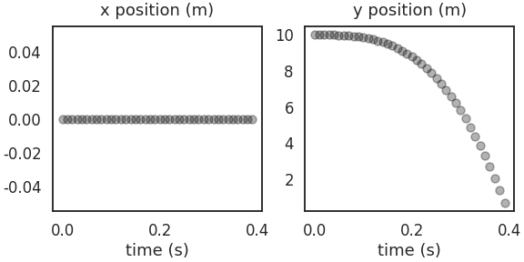
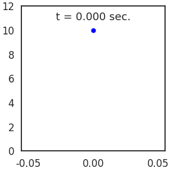
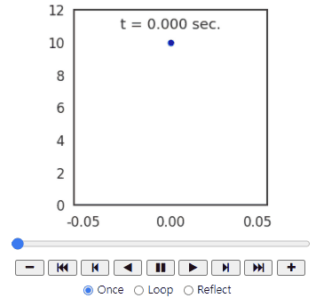
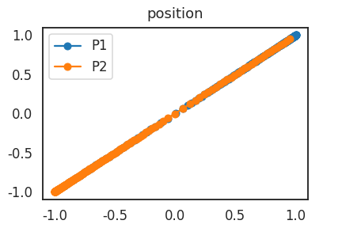
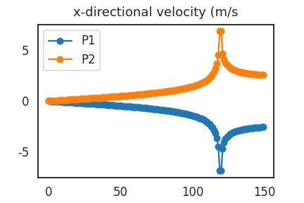
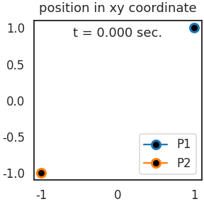
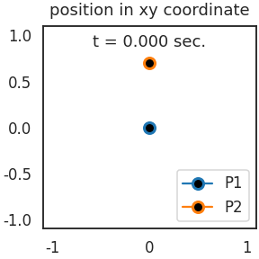
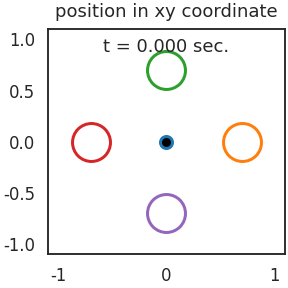

- 파이썬은 과학과 공학을 구현하기 좋습니다.
- 간단한 몇 개의 코드로 방정식을 구현하고,
- 시각화 기법을 사용해 우리 눈으로 봅니다.
1. 만유인력
- 질량이 있는 물체끼리는 끌어당기는 힘이 있습니다. 만유인력이라고 합니다.
- 뉴턴이 발견한 것으로 유명하고, 중력파는 우주의 비밀을 여는 열쇠가 됩니다.
- 두 물체의 질량이 $m_1$, $m_2$, 거리가 $r$일 때 다음과 같은 방정식으로 표현됩니다.
$$F = G\frac{m_1 m_2}{r^2}$$
- $G$는 중력 상수라고 하며 값은 $6.67 \times 10^{-11} [\textrm{m} \cdot \textrm{kg}^{-1}\textrm{s}^{-2}]$ 입니다.
2. 자유 낙하
- 만유 인력을 일상의 물건들에서 느끼기엔 너무 미미하지만 지구나 태양이라면 이야기가 달라집니다.
- 위 식의 $m_2$에 지구의 질량을 넣고 $r$에 지구 반지름을 넣으면 지구의 중력이 됩니다.
$$F = mg$$
- 중학교때 배운 식으로 정리되며, 중력 가속도 $g = 9.8 [\textrm{m} \cdot \textrm{s}^{-2}]$ 입니다.
- 간단히 물체의 자유 낙하를 시뮬레이션 합니다.
2.1. python setting
- 기본 라이브러리를 불러오고 물체의 질량 등을 설정합니다.
- 연속적인 시간을 0.01초 단위로 끊어서 자유낙하를 모사하려고 합니다.
1
2
3
4
5
6
7
8
9
10
11
12
13
14# 기본 라이브러리
import numpy as np
import matplotlib.pyplot as plt
import seaborn as sns
sns.set_style("white")
sns.set_context("talk")
# 물체
mass = 1 # 질량 [kg]
position = np.array([0, 10]) # x, y 위치 [m]
v = np.array([0, 0]) # x, y 방향 초기 속도 [m/s]
t = 0 # 초기 시간 [s]
dt = 0.01 # 시간 단위 [s]
g = np.array([0, -9.8]) # 중력 가속도 [m/s]
2.2. 자유 낙하 시뮬레이션
- 지상 높이 10미터에서 땅에 떨어지는 시간을 살펴봅니다.
- 중학교에서 배우는 아래 공식에 $a$ 대신 $g$를 넣습니다.
$$s = v_0 t + \frac{1}{2}at^2$$
땅을 뚫고 들어가는 상황은 가정하지 않습니다.
초기 위치로 가정한 position의 y좌표 > 0일 때만 계산합니다.
걸리는 시간은
ts리스트, 위치는positions에 모읍니다.1
2
3
4
5
6
7
8
9
10
11
12
13
14
15
16
17
18# 시뮬레이션
ts = []
positions = []
while position[1] >= 0:
ts.append(t)
positions.append(position)
position = position + v*t + 0.5 * g * t**2
t += dt
# 시각화
fig, axs = plt.subplots(ncols=2, figsize=(8, 4), constrained_layout=True)
directions = ["x", "y"]
for i, (ax, direction) in enumerate(zip(axs, directions)):
ax.scatter(ts, np.array(positions)[:,i], alpha=0.3, c="k")
ax.set_xlabel("time (s)")
ax.set_title(f"{direction} position (m)", pad=12)
좌우로 흔들릴 일은 없으므로 x position은 그대로
중력에 의해 떨어지기만 하므로 y position만 변화합니다.
2.3. 자유 낙하 애니메이션
좀 재밌게 만들어 봅시다.
matplotlib의 애니메이션 기능을 이용해서 만들 수 있습니다.
물체의 위치를 표현할 scatter plot과 시간을 표현할 text를 내용만 비우고 만든 뒤에,
time step마다 각각의 데이터만 업데이트하는 방식을 사용했습니다.
1
2
3
4
5
6
7
8
9
10
11
12
13
14
15
16from matplotlib import animation
fig, ax = plt.subplots(figsize=(4, 4), constrained_layout=True)
scatter, = ax.plot([], [], marker="o", mfc="b", mec="w")
time_text = ax.text(0.5, 0.9, f"", transform=ax.transAxes, ha="center")
ax.set_ylim(0, 12)
def updatefig(i):
scatter.set_data(positions[i][0], positions[i][1])
time_text.set_text(f"t = {ts[i]:.03f} sec.")
return fig,
ani = animation.FuncAnimation(fig, updatefig, interval=100, blit=True, repeat=False, frames=len(ts))
ani.save("1_gravity_02.gif")
ani.save()명령으로 파일로 저장했습니다.주피터 노트북이나 Google Colab에서 다음 코드를 사용하면 interactive animation을 얻을 수 있습니다.
1
2from IPython.display import HTML
HTML(ani.to_jshtml())
3. 움직이는 두 개의 물체
3.1. class로 물체 생성
지구 vs 물체 대신 물체 vs 물체 구도가 되면 조금 복잡해집니다.
지구는 너무나 거대하기 때문에 상수로 놓을 수 있었지만 물체는 변수입니다.
서로 힘을 주고 받을 때 위치와 속도가 변합니다.
물체마다 받는 힘과 이로 인한 위치 변화 등을 계산합시다. class가 편합니다.
1
2
3
4
5
6
7
8
9
10
11
12
13class Particle():
def __init__(self, mass, pos, v, fix=False):
self.mass = mass # scalar # 질량. scalar
self.pos = np.array(pos) # 위치 (x, y) 2D vector
self.v = np.array(v) # 속도 (x, y) 2D vector
self.a = np.array([0,0]) # 가속도 (x, y) 2D vector
self.fix = fix # 고정 여부. True or False
def update(self, force):
if not self.fix: # 고정이 되어 있지 않을 때만 데이터 업데이트
self.a = force/self.mass
self.pos = self.pos + (self.v * dt) + (0.5*self.a * dt**2)
self.v = self.v + self.a * dt이제 물체를 class로 정의할 준비가 되었습니다.
물체를 입자라는 뜻의 Particle로 부르겠습니다.
각각의 질량, 위치, 속도를 정하고 생성합니다.
1
2
3
4
5
6P1_mass, P2_mass = 1, 1
P1_pos, P2_pos = [1, 1], [-1, -1]
P1_v, P2_v = [0, 0], [0, 0]
P1 = Particle(P1_mass, P1_pos, P1_v)
P2 = Particle(P2_mass, P2_pos, P2_v)
3.2. 중력 계산 함수
- 물체들 간의 인력을 계산할 함수를 만듭니다.
- 맨 위의 방정식을 옮깁니다.
- 방정식에 따르면 거리가 너무 가까울 때 만유인력이 무한대로 증가하는 문제가 있습니다.
- 특정 거리
dist_cr미만으로 오면 인력을 0으로 강제해서 관성으로만 움직이게 합니다.
- 만유인력 상수가 너무 작아서 임의로 크게 키웠습니다.
- 여기에 걸맞게 질량이 아주 커다란 천체들의 움직임이라고 생각할 수 있습니다.
1
2
3
4
5
6
7
8
9
10
11
12
13
14
15def calc_force(P_self, P_other, k=1, dist_cr = 0.02):
pos_self = P_self.pos
pos_other = P_other.pos
rel_vec = pos_other - pos_self
dist = np.linalg.norm(rel_vec)
mass_self = P_self.mass
mass_other = P_other.mass
if dist < dist_cr:
force = 0
return rel_vec # [0, 0]
else:
force = k*mass_self*mass_other/ dist**2
return force * rel_vec/dist
3.3. 두 물체간의 만유인력
150번 iteration하면서 시간, 위치, 속도, 힘을 차례로 뽑아내며 업데이트합니다.
1
2
3
4
5
6
7
8
9
10
11
12
13
14
15
16
17
18
19
20
21
22
23
24
25iter_max = 150
ts = [] # 시간
P1_pos, P2_pos = [], [] # 시간별 위치
P1_v, P2_v = [], [] # 시간별 속도
for i in range(iter_max):
# time update
ts.append(i*dt)
# position update
P1_pos.append(P1.pos)
P2_pos.append(P2.pos)
# velocity update
P1_v.append(P1.v)
P2_v.append(P2.v)
# calculate force
P1_force = calc_force(P1, P2, k=10)
P2_force = calc_force(P2, P1, k=10)
# update
P1.update(P1_force)
P2.update(P2_force)어떻게 움직였나 한번 봅시다.
1
2
3
4
5
6
7P1_pos = np.array(P1_pos)
P2_pos = np.array(P2_pos)
plt.plot(P1_pos[:, 0], P1_pos[:, 1], "o-", label="P1")
plt.plot(P2_pos[:, 0], P2_pos[:, 1], "o-", label="P2")
plt.title("position", pad=12)
plt.legend()
뭔가 이상합니다.
시작점은 P1이 [1, 1], P2가 [-1, -1]이었습니다.
서로 끌어당기다가 한가운데인 [0, 0]에서 만나야 할 것 같은데 한참을 더 지나갑니다.
x방향 속도를 그려봅니다.
1
2
3
4plt.plot(np.array(P1_v)[:, 0], "o-", label="P1")
plt.plot(np.array(P2_v)[:, 0], "o-", label="P2")
plt.title("x-directional velocity (m/s", pad=12)
plt.legend()
120번째 step 부근에서 속도가 크게 빨라졌다가 감소하지만 부호는 바뀌지 않습니다.
원점을 지나 힘이 거꾸로 작용해도 관성에 의해 서로를 지나쳤고,
이 때 작용하는 힘은 다시 불러오기엔 역부족인 듯 합니다.
3.4. 동영상 제작 함수
동영상으로 확실하게 살펴봅니다.
왠지 앞으로 동영상을 자주 만들 것 같습니다.
N개의 입자를 다룰 수 있도록 앞의 코드를 일반화합니다.
질량에 따라 입자의 크기와 색이 바뀌도록 설정을 해두고,
컬러맵을 사용해서 입자마다 다른 색을 두르도록합니다.
1
2
3
4
5
6
7
8
9
10
11
12
13
14
15
16
17
18
19
20
21
22
23
24
25cmap = plt.get_cmap("tab10")
def gen_animation(Ps, Ps_pos, ts, title, legend=True):
fig, ax = plt.subplots(figsize=(4, 4), constrained_layout=True)
mfcs = ["k" if P.mass > 0 else "w" for P in Ps]
mss = [12*np.sqrt(abs(P.mass)) for P in Ps]
plots = [ax.plot([], [], marker="o", mfc=mfc, mec=cmap(j/10), mew=3, ms=ms, label=f"P{j+1}")
for j, (P_pos, mfc, ms) in enumerate(zip(Ps_pos, mfcs, mss))]
time_text = ax.text(0.5, 0.9, f"", transform=ax.transAxes, ha="center")
title = ax.set_title(title, pad=12)
ax.set_xlim(-1.1, 1.1)
ax.set_ylim(-1.1, 1.1)
if legend:
ax.legend(loc="lower right")
def updatefig(i):
[plot[0].set_data(P_pos[i][0], P_pos[i][1]) for plot, P_pos in zip(plots, Ps_pos)]
time_text.set_text(f"t = {ts[i]:.03f} sec.")
return fig,
ani = animation.FuncAnimation(fig, updatefig, interval=100, blit=True, repeat=False, frames=len(ts))
return ani아까 데이터를 다시 넣어 애니메이션을 만듭니다.
서로를 지나쳐간 뒤에 속도가 줄어드는 모습이 관찰됩니다.
1
ani = gen_animation([P1, P2], [P1_pos, P2_pos], ts, "position in xy coordinate")

4. 고정된 물체와 움직이는 물체
4.1. N개의 물체 사이 만유인력
- 이제 우리는 만유인력을 계산하고 그릴 수 있습니다.
- N개의 물체를 그리는 함수를 만들었으니, N개의 물체 사이 힘을 계산하는 함수도 만듭시다.
- 2중 for loop을 사용해서 모든 입자간의 인력을 계산하여 총 합을 구합니다.
1
2
3
4
5
6
7
8
9
10
11
12
13
14
15
16
17
18
19
20
21
22
23
24def run_force(Ps, k=10, iter_max=150):
Ps_pos = []
for _ in Ps:
Ps_pos.append([])
ts = []
for i in range(iter_max):
# time update
ts.append(i*dt)
# position update
for P, P_pos in zip(Ps, Ps_pos):
P_pos.append(P.pos)
# calculate force
P_splits = [[P, list(set(Ps) - set([P]))] for P in Ps]
for j, (P_self, P_others) in enumerate(P_splits):
P_self_force = np.array([0.0, 0.0])
for P_other in P_others:
P_self_force += calc_force(P_self, P_other, k=k)
# update force
P_self.update(P_self_force)
return Ps, Ps_pos, ts
4.2. 고정된 물체와 던져진 물체
1번 물체 P1은 원점 [0,0]에 고정하고
2번 물체 P2는 [0, 0.7]에서 $-x$방향으로 던집니다.
P2의 속도에 따른 궤적 변화를 살펴봅니다.
1
2
3
4
5
6
7
8
9
10
11
12
13# 물체 정의
P1_mass, P2_mass = 1, 1
P1_pos, P2_pos = [0, 0], [0, 0.7]
P1_v, P2_v = [0, 0], [-2, 0]
P1_fix, P2_fix = True, False
P1 = Particle(P1_mass, P1_pos, P1_v, P1_fix)
P2 = Particle(P2_mass, P2_pos, P2_v, P2_fix)
# 만유인력 계산, 시각화
Ps = [P1, P2]
Ps, Ps_pos, ts = run_force(Ps, k=10, iter_max=150)
ani = gen_animation(Ps, Ps_pos, ts, "position in xy coordinate")
SF영화에서 많이 본 듯한 모습이 관찰됩니다.
중앙의 P1을 축으로 빙 돌아 자신이 온 방향으로 나갑니다.
- 이번엔 P2를 조금 빠르게 던집니다.
- 나머진 가만히 두고 position 초기화, velocity 재설정만 추가합니다.
- 만유인력과 원심력이 같아지는 속도에서는 물체가 지표면에서 추락하지 않고 궤도를 그립니다.
- 우리가 사용한 질량 등을 넣으면 다음과 같이 정리됩니다.
$$ v = \sqrt{\frac{km_1}{r}} = 3.8 [\textrm{m}/\textrm{s}]$$
이를 제1 우주 속도라고 합니다.
1
2
3
4
5
6
7
8
9
10
11# 시작점과 속도 재설정
P1_pos, P2_pos = [0, 0], [0, 0.7]
P1_v, P2_v = [0, 0], [-3.8, 0]
P1 = Particle(P1_mass, P1_pos, P1_v, P1_fix)
P2 = Particle(P2_mass, P2_pos, P2_v, P2_fix)
# 만유인력 계산, 시각화
Ps = [P1, P2]
Ps, Ps_pos, ts = run_force(Ps, k=10, iter_max=150)
ani = gen_animation(Ps, Ps_pos, ts, "position in xy coordinate")쪼개진 시간과 유효숫자 등의 차이로 원궤도에서는 다소 어긋났습니다.
하지만 전반적으로 원을 그리며 제 자리로 옵니다.
- 더 빠르면? 말할 것도 없습니다.
- 도망가 버립니다.
- 속도를 $5 [\textrm{m}/\textrm{s}]$로 빠르게 했을 때 그림입니다.

5. 마이너스 질량
실제로는 불가능하지만 코드에는 마이너스 질량을 넣을 수 있습니다.
10배 무거운 마이너스 질량의 벽을 뚫을 수 있나 봅시다.
1
2
3
4
5
6
7
8
9
10
11
12
13
14P0_mass, P1_mass, P2_mass, P3_mass, P4_mass = 1, -10, -10, -10, -10
P0_pos, P1_pos, P2_pos, P3_pos, P4_pos = [0, 0], [0.7, 0], [0, 0.7], [-0.7, 0], [0, -0.7]
P0_v, P1_v, P2_v, P3_v, P4_v = [3, 1], [0, 0], [0, 0], [0, 0], [0, 0]
P0_fix, P1_fix, P2_fix, P3_fix, P4_fix = False, True, True, True, True
P0 = Particle(P0_mass, P0_pos, P0_v, P0_fix)
P1 = Particle(P1_mass, P1_pos, P1_v, P1_fix)
P2 = Particle(P2_mass, P2_pos, P2_v, P2_fix)
P3 = Particle(P3_mass, P3_pos, P3_v, P3_fix)
P4 = Particle(P4_mass, P4_pos, P4_v, P4_fix)
Ps = [P0, P1, P2, P3, P4]
Ps, Ps_pos, ts = run_force(Ps, k=10, iter_max=50)
ani = gen_animation(Ps, Ps_pos, ts, "position in xy coordinate", legend=False)$(3, 1) [\textrm{m}/\textrm{s}]$로는 부족합니다. 못 나갑니다.
$(5, 2) [\textrm{m}/\textrm{s}]$는 어떨까요?
몸부림 끝에 탈출에 성공합니다.
6. 정전기력
- 만유인력 방정식은 정전기력
electrostatic force과 매우 비슷합니다. - 전하 $q_1$과 $q_2$를 가진 전하 두 개가 거리 $r$만큼 멀리 있다면 이들 사이에는 아래 힘이 작용합니다.
$$F = k\frac{q_1 q_2}{r^2}$$
상수 $k$는 $8.99 \times 10^9 [N \cdot m^2 \cdot C^{-2}]$ 입니다.
일반적으로 만유인력보다 훨씬 강하기 때문에 우리 일상에서 자주 볼 수 있습니다.

정전기력은 부호가 다르면 끌어당기고 부호가 같면 밀칩니다.
위에서 마이너스 질량을 사용한 예시는 같은 부호의 정전기력 시각화로 볼 수도 있습니다.